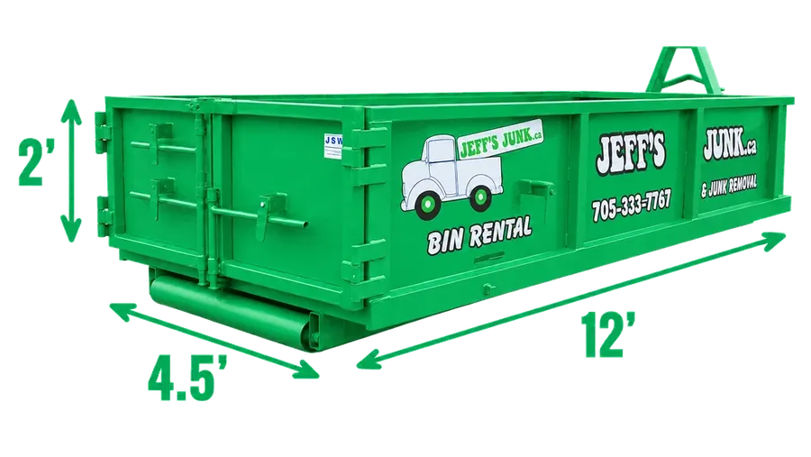

Is there a dump in Innisfil? No.
Here is where to go.
Innisfil has no landfill of its own. The Town sends residents to the County of Simcoe's drop offs.
| Site | Where | Distance |
|---|---|---|
| West Gwillimbury drop off | Line 12, Bradford | About 22 km |
| Oro drop off | Old Barrie Road West, Oro-Medonte | About 44 km |
| Barrie landfill | Ferndale Drive North | Barrie residents only |
Bring proof you live in the County of Simcoe. Staff cannot help you unload, and Saturdays and early in the week are the busiest. Fees are by weight, with flat fees for mattresses and fridges. Yard waste, scrap metal, electronics and tires (up to 10) are free. From the Town of Innisfil and County of Simcoe websites, checked October 2026. Hours are on simcoe.ca and in the Simcoe County Collects app. Next door: Barrie and Bradford, home of the Line 12 drop off. No truck? Our crew loads it at your place, or we drop a bin on your driveway.
The County's booked pickup
Furniture at the curb in Innisfil.
The County of Simcoe picks up bulky items at the curb, by appointment, all year. If you book it, here is the list.
- 1Call Service SimcoeCall 1.800.263.3199 and pay when you book. List every item. Changes need 2 business days.
- 2Know the chargesYou pay per five items, with extra for each mattress and fridge. There is no refund if someone else takes them first.
- 3Get it out on timeEverything at the curb by 7am on pickup day. Each item up to 68 kg (150 lb). Items with signs of bed bugs can be refused.
Regular garbage in Innisfil is collected by the County too, not the Town. Carts go within 8 feet of the road, with 2 feet between carts and anything else. More than a few things, or heavy ones? Our crew carries it out from wherever it is, in one visit.
A bin on an Innisfil road
Town road or County road?
Most bins go fully on the driveway, which is the easy way. On a road, who owns the road decides the permit.
Getting a permit is up to you. Town of Innisfil road permits page and Roads Bylaw 073-19, checked October 2026.

Sod, soil and sand don't go at the curb.
The County's yard waste pickup won't take sod, soil or sand. Our 4 and 7 yard dirt bins are a flat rate for 1 to 7 days, with no dump fee and no weight limit on a clean load. Dirt only: NO MIXING. Dirt and concrete bins
Jeff to confirm: Do sod and sand count as a clean dirt load? If not, the dirt section says "Got dirt to get rid of?" instead.
Jeff to confirm: Innisfil recent bin rentals. Approve the three Innisfil jobs listed in the office app (two 14 yard bins and a 20 yard bin, July to September 2026). Nothing about them goes on the page until you say so.
Reviews
Don't take our word for it.
★★★★★
[Real Google review goes here]
★★★★★
[Real Google review goes here]
★★★★★
[Real Google review goes here]
Questions
Innisfil bin, junk and dump questions.
Still wondering? Call during business hours or text us any time.
Can Innisfil residents use the Barrie dump?
No. The Barrie landfill on Ferndale Drive North is for Barrie residents only. The County sites take waste from County addresses, with proof of where you live.
Who picks up garbage in Innisfil?
The County of Simcoe, not the Town. Your collection schedule is on simcoe.ca and in the Simcoe County Collects app.
Do you cover all of Innisfil?
Yes, anywhere in Innisfil, and all of it gets Zone 1 prices.
How soon can you drop off a bin?
Usually the same day you call.
When are you open?
Monday to Friday 8am to 7pm, and Saturday 8am to 12pm. Closed Sundays and holidays.
More Innisfil services.
 Junk removalOur crew loads it at your place.Junk removal in Innisfil →
Junk removalOur crew loads it at your place.Junk removal in Innisfil → Bin rentalA bin on your Innisfil driveway at Zone 1 prices.Bin rental in Innisfil →
Bin rentalA bin on your Innisfil driveway at Zone 1 prices.Bin rental in Innisfil → Dirt and concrete binsOne material per bin.Dirt and concrete bins →
Dirt and concrete binsOne material per bin.Dirt and concrete bins → Appliance removalCarried out and taken away.Appliance removal →
Appliance removalCarried out and taken away.Appliance removal → Estate clean outsA whole house cleared.Estate clean outs →
Estate clean outsA whole house cleared.Estate clean outs → CommercialJunk removal for businesses.Commercial →Furniture donationGood furniture to Furniture Bank. There is a pickup fee.Furniture donation →
CommercialJunk removal for businesses.Commercial →Furniture donationGood furniture to Furniture Bank. There is a pickup fee.Furniture donation →